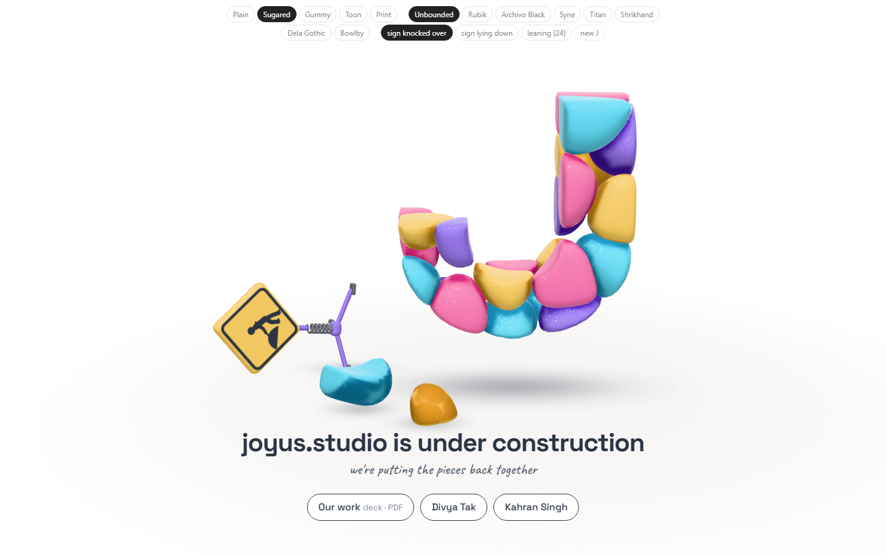
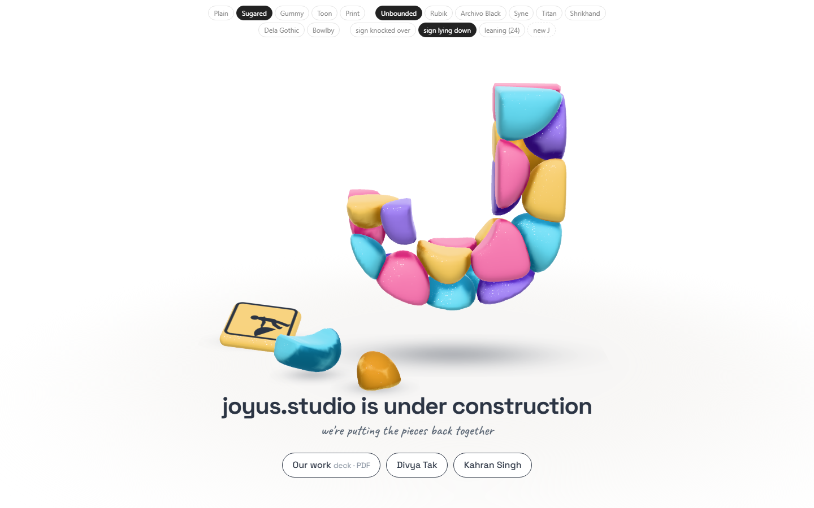
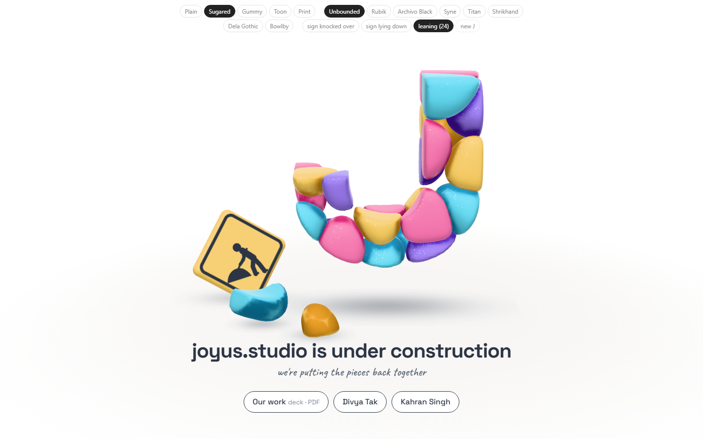
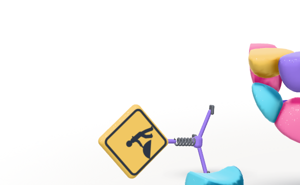
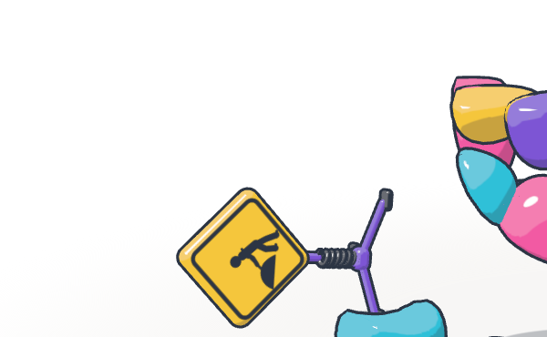
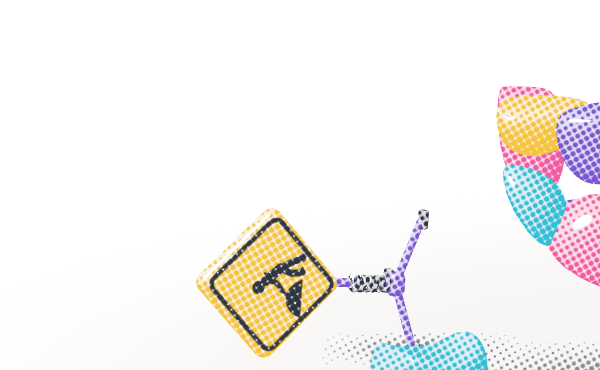

Study 25 · 6 October 2026
Knocked over
The sign, smaller, down on the floor by the fallen stones, three ways. Pick: knocked over on its stand.
Open the page (placements at the top)


Knocked over, in three looks



Wrong turns: the first "lying down" ran under a fallen stone (the test caught it); the first "knocked over" hid a leg behind the cyan stone. Both moved back.
Open
- Font? Look?
- Deck link, your site's address, homepage only or every page.
Test: page-test.mjs, 55 checks in a browser (each placement rests on the floor, clear of the stones; 8 fonts; Print screens the ink); read by check.cjs.